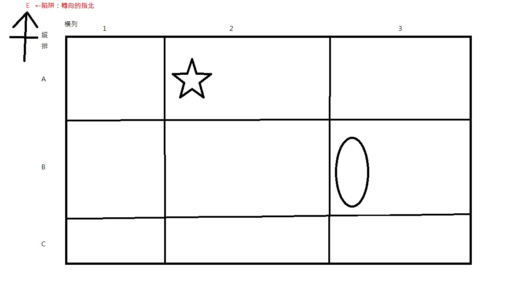
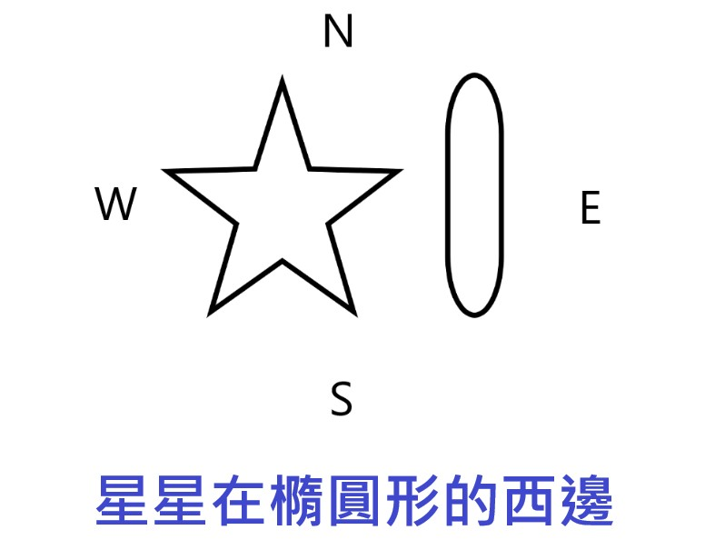
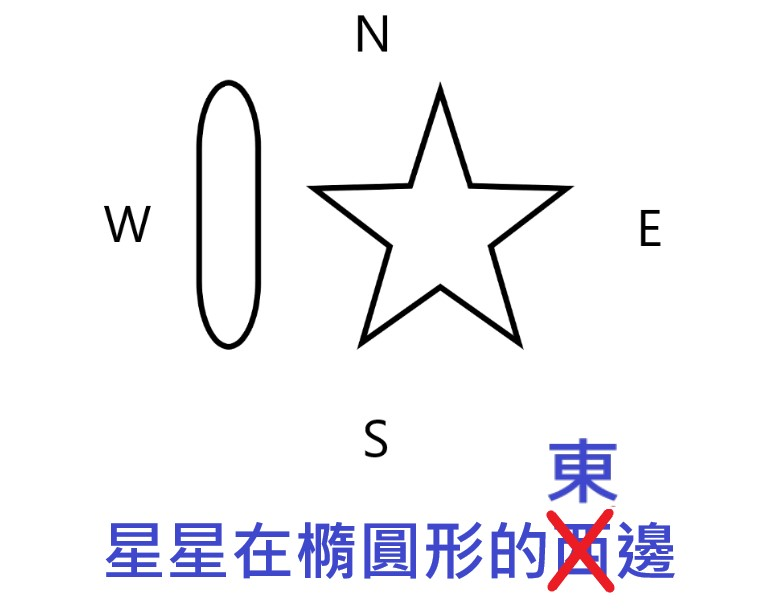

位置
- 位置：描述某些目標物的空間所在。
- 方位：東E、西W、南S、北N
- 相對位置：利用目標物和參考點的方位關係，表示目標物所在地點。
- 註：依據參考點不同，會使兩地空間關係改變-->相對位置答案不只一組。
- 如下圖，隨著參考點(橢圓形)位置的改變，導致相對位置答案改變。
- 絕對位置：利用座標系統來表現目標物的所在地-->能精確指出一地位置，答案只有一組。
- 座標系統：是由橫坐標或縱座標所組成。
- 註1:先橫後縱法(列，排)、先經後緯法 如:台灣(120°東經，25°北緯)
- 註2:北半球習慣-->地圖上方指向北方，但陷阱常常出現在此，如下圖
- 相對位置：星星在橢圓形的東(注意尚未確定)北方；絕對位置：星星位在(2，A)、橢圓形位在(3，B) 

